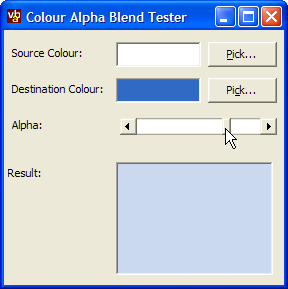

Alpha Colour Blend (12K)
Alpha Colour Blend (12K)
 28 Mar 2003
28 Mar 2003
First Posted

Blend Two Colours Together Using Alpha
Demonstrates how to combine two colours proportionally to emulate the alpha colouring effects in XP
If you're not using GDI+ for drawing, then there isn't an easy way to determine what colour you would get if you blended two colours together with a specified alpha amount. This article provides a routine that allows you to do it using straight VB code.
Alpha-Colour Blending
The algorithms for alpha colour blending are described in the MSDN help for the BLENDFUNCTION structure. These are very simple and easy to implement in your own code; you can use these functions to emulate the Office XP menu colour styles as well as for more sophisticated blending functions using the Alpha DIBSection code.
This code provides the implementation for blending two colours by applying a constant alpha to the source and destination:
Private Declare Function OleTranslateColor Lib "OLEPRO32.DLL" ( _
ByVal OLE_COLOR As Long, _
ByVal HPALETTE As Long, _
pccolorref As Long) As Long
Private Const CLR_INVALID = - 1
Public Property Get BlendColor( _
ByVal oColorFrom As OLE_COLOR, _
ByVal oColorTo As OLE_COLOR, _
Optional ByVal alpha As Long = 128 _
) As Long
Dim lCFrom As Long
Dim lCTo As Long
lCFrom = TranslateColor(oColorFrom)
lCTo = TranslateColor(oColorTo)
Dim lSrcR As Long
Dim lSrcG As Long
Dim lSrcB As Long
Dim lDstR As Long
Dim lDstG As Long
Dim lDstB As Long
lSrcR = lCFrom And &HFF
lSrcG = (lCFrom And &HFF00&) \ &H100&
lSrcB = (lCFrom And &HFF0000) \ &H10000
lDstR = lCTo And &HFF
lDstG = (lCTo And &HFF00&) \ &H100&
lDstB = (lCTo And &HFF0000) \ &H10000
BlendColor = RGB( _
((lSrcR * alpha) / 255) + ((lDstR * (255 - alpha)) / 255), _
((lSrcG * alpha) / 255) + ((lDstG * (255 - alpha)) / 255), _
((lSrcB * alpha) / 255) + ((lDstB * (255 - alpha)) / 255) _
)
End Property
' Convert Automation color to Windows color
Private Function TranslateColor(ByVal clr As OLE_COLOR, _
Optional hPal As Long = 0) As Long
If OleTranslateColor(clr, hPal, TranslateColor) Then
TranslateColor = CLR_INVALID
End If
End Function
The demonstration download project demonstrates using a Color Picker common dialog directly from code to pick the source and destination colours, then uses a Scroll Bar to allow you to modify the alpha blending.